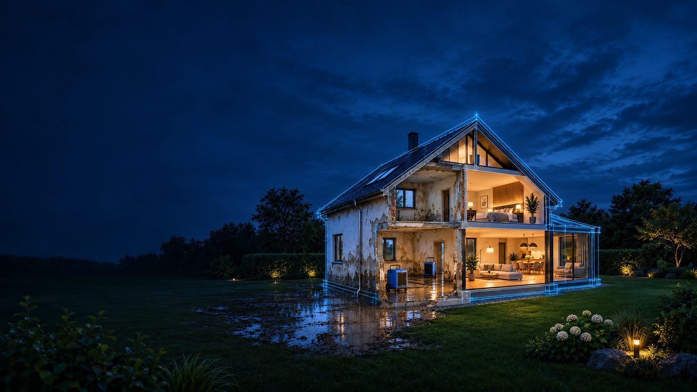
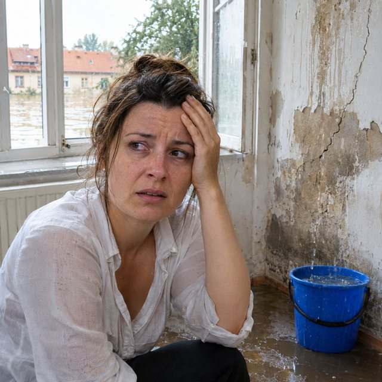
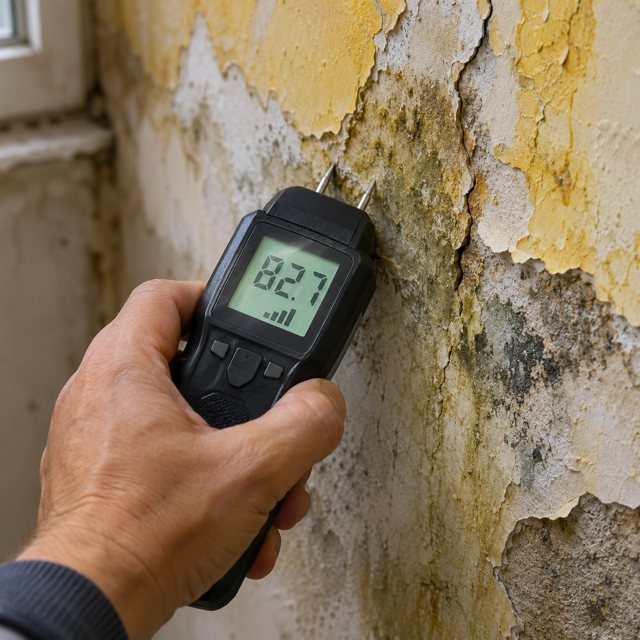
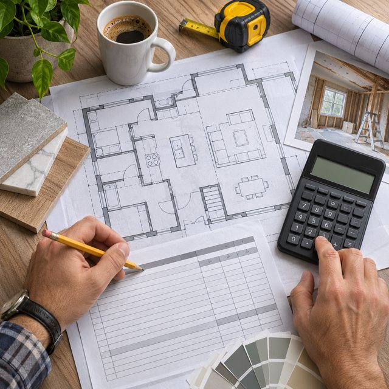
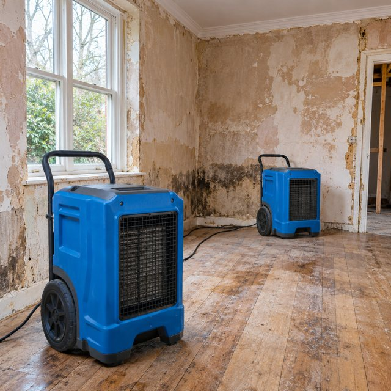
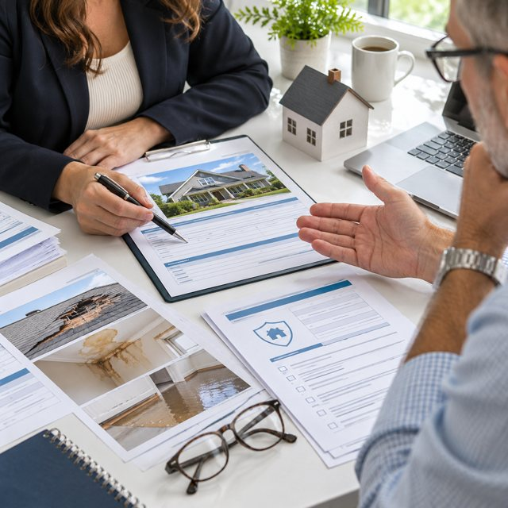

VODA · VLHKOST · ŘEŠENÍ
Známe
správný
postup.
Pomáháme vrátit domovy do normálu
po haváriích vody. Rychlá diagnostika,
účinné vysoušení, kompletní opravy
a pomoc s pojištěním – vše pod jednou střechou.

01HAVÁRIE

02DOKUMENTACE
Kontrola, měření vlhkosti
a fotodokumentace

03ROZPOČET
Orientační rozpočet
na vysoušení a
kompletní opravy

04VYSOUŠENÍ
A SANACE
Zapůjčení vysoušečů,
techniky nebo odborná
sanace a omítkářské práce

05REVIZE
POJIŠTĚNÍ
Prověření pojistného
krytí a doporučení
výhodnějšího pojištění